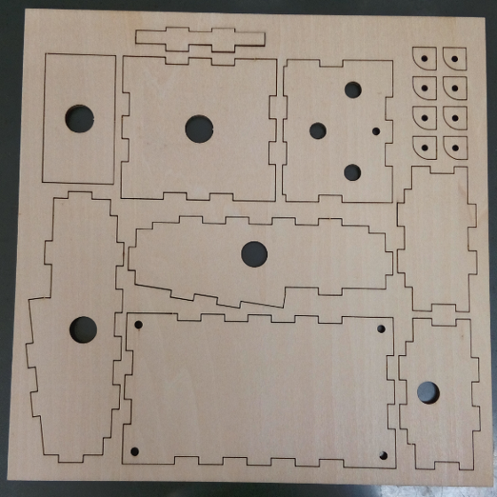
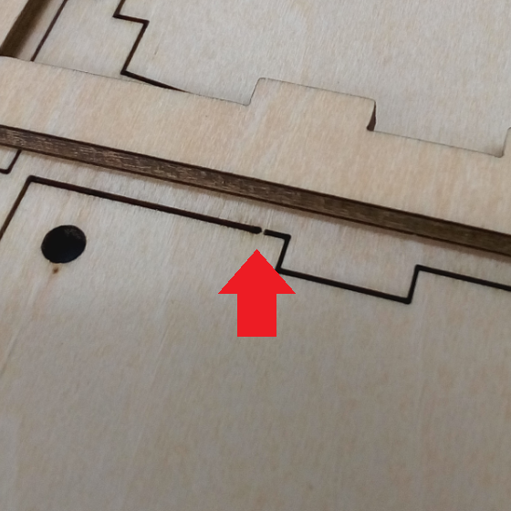
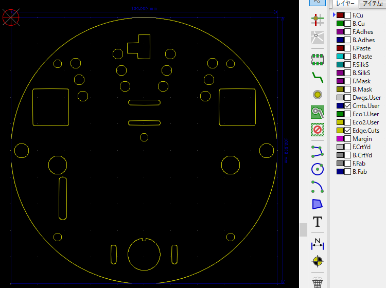
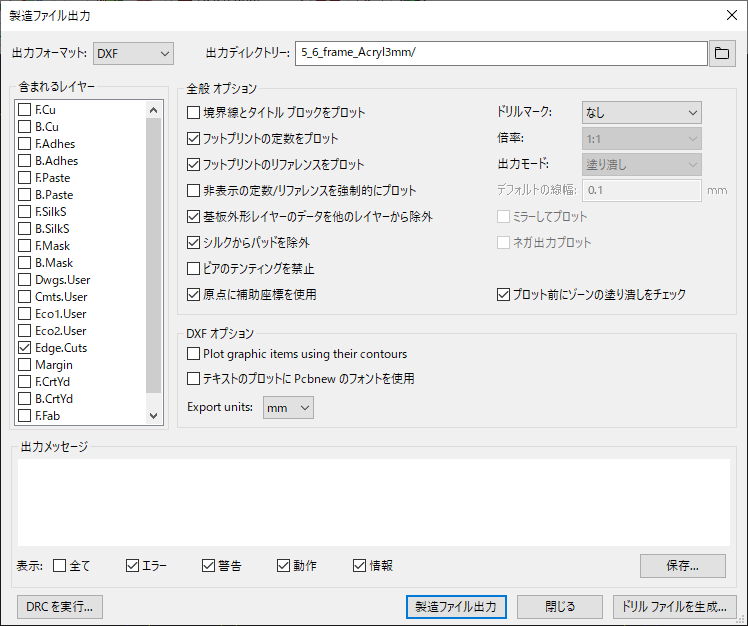
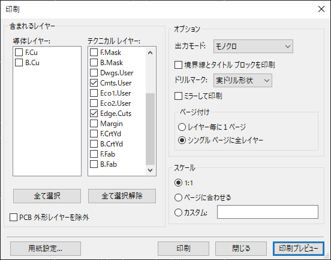
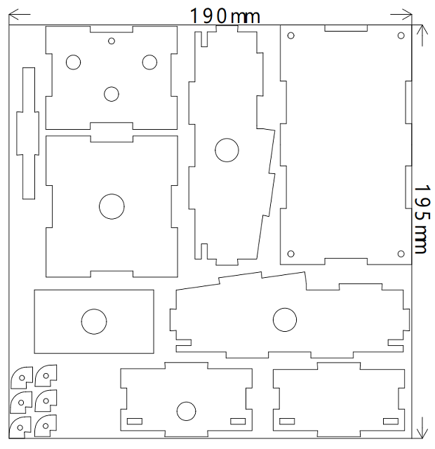

Elecrowのレーザーカットサービス注文用メモ
2020年10月23日 カテゴリー：メモ・雑記
Elecrowのアクリルカットや木材カット注文時の自分用メモです。
＜利用例＞
・Ibanez TS9 TUBE SCREAMER アクリル製ケース & 木製ケース
・Fuzz Face 積層アクリル筐体
※2020年9月時点での情報です。仕様変更にご注意ください。
- 【特徴・注意点】
- 使えるデータの種類はEPS、DXF、CDR、PDF（木材カットのページにはDWGも記載あり）
- 注文数1で5枚分となる
- PCBのように面付というものはなく、指定寸法内にいくらでも図を入れてよい（ただし、細かいパーツが多いと忘れられるかも）
- 注文ページに記載されている厚みより実物は0.1～0.25mm程度薄い
- レーザーの幅（太さ）は約0.2mm→線の両側0.1mmが余計に削られることになるのでそれを計算に入れて設計
- 木材カットの場合、プラモデルのように一部切り取られていない状態で配送される（毎回この状態なのかどうかは不明）

【KiCadでのデータ作成】
基板上のジャック等の位置に合わせてアクリルのデータを作成したい場合、元のPCBデータ（.kicad_pcb）をコピーして編集します。ただしカーソルがグリッド単位になるので、円の接線等作図しにくい場面が出てきます。

Edge.Cutsレイヤーに作図します。線が途切れているかどうかをDRCでチェックできます。3D表示もできますが、複数枚分のデータがあると穴部分が表示されないようです。Cmts.Userレイヤーに提出ファイル用の寸法線を入れます。その他の寸法線や下書き等はDwgs.Userレイヤーに描いています。
（1） DXFファイル出力

プロットの出力フォーマットをDXFとし、Edge.Cutsレイヤーのみ出力します。DXFオプションはチェックを外し、Export units: をmmにします。
（2） PDFファイル出力
Elecrowの注文ページに外形寸法を伝えるよう記載があります。TXTファイルでもよいらしいですが、念のため寸法線が入ったPDFファイルを準備することにしています。

印刷からEdge.Cuts、Cmts.Userレイヤーを選択し、Microsoft Print to PDFでPDFファイルを出力します。
(1) (2) で出力したDXFファイルとPDFファイルをまとめてzipに圧縮し、注文ページでアップロードします。
【Jw_cadでのデータ作成】
私は昔から製図関係はJw_cadというフリーソフトを使っています（今は他に使いやすいフリーソフトがあるかもしれません）。このソフトでDXFファイルをそのまま編集します。

印刷→Microsoft Print to PDFで外形寸法を入れたPDFファイルを出力します。このPDFファイルとDXFファイル本体をまとめてzipに圧縮し、注文ページでアップロードします。